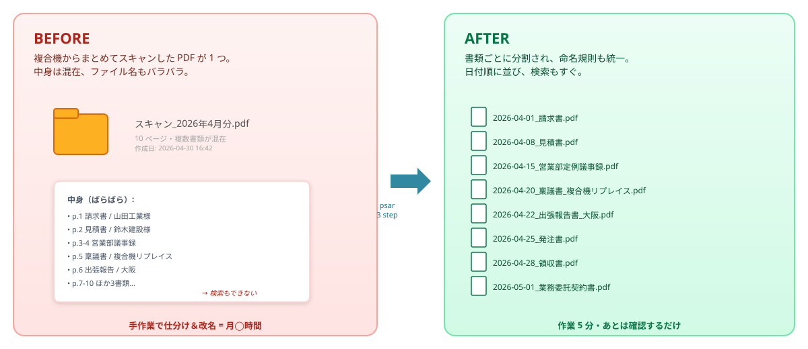
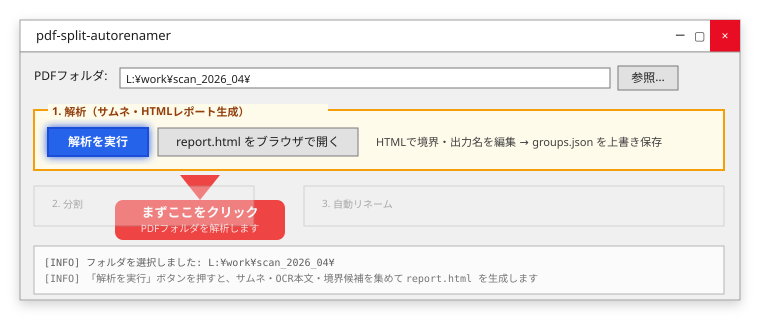
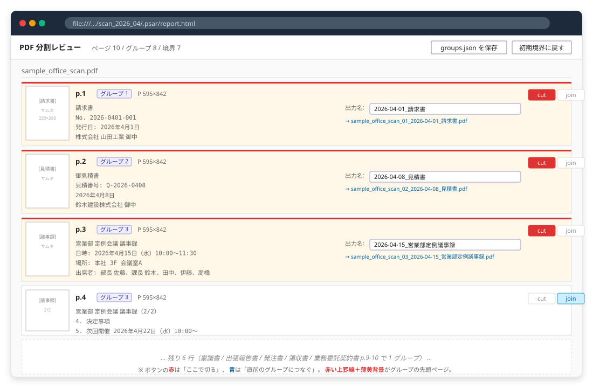
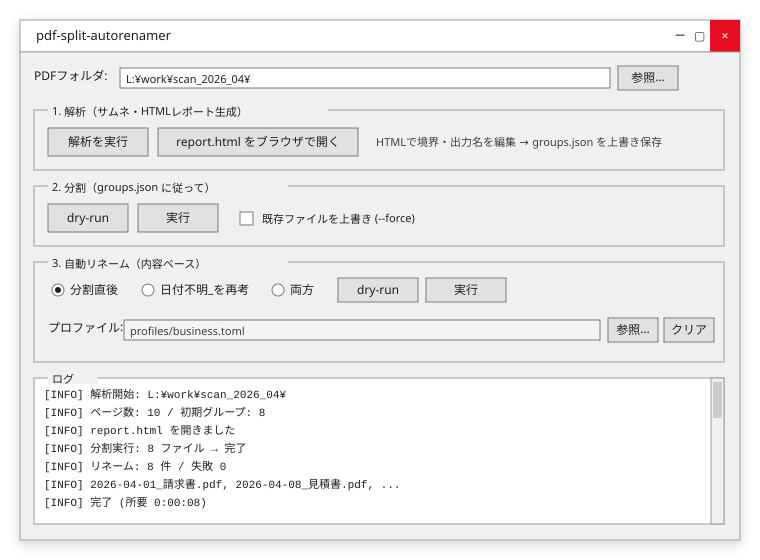

📋
総務・庶務
稟議書・通達・社内メモ・出張報告書を毎月まとめてスキャンするけど、 ファイル名を1つ1つ付け直すのが地味につらい。
複合機やScanSnapで一気にスキャンした書類PDF。
請求書・見積書・議事録・契約書…が混ざった1ファイルを、
書類ごとに分割し、
「YYYY-MM-DD_書類タイプ.pdf」に自動リネームします。

Problem
複合機の前で、ドキュメントを1枚ずつ仕分け……
稟議書・通達・社内メモ・出張報告書を毎月まとめてスキャンするけど、 ファイル名を1つ1つ付け直すのが地味につらい。
請求書・領収書・発注書を月末にまとめてスキャン。 電帳法対応で命名規則をそろえたいけど、人力では揺れが出る。
顧客ごとの契約書・覚書・議事録をスキャンして共有フォルダへ。 後から検索できる名前でないと、結局誰も探せない。
How it works
GUI でも CLI でも、流れは同じ。
フォルダを選んで 解析を実行 ボタンをクリック。
あなたのPC上で各ページのサムネ・OCR テキスト・向き・サイズを集めて、境界候補を自動推定します。
結果はローカルファイル .psar/report.html として保存され、ブラウザで自動的に開きます。


report.html がブラウザで開く（社外送信なし）
{
"sample_office_scan.pdf": [
{ "range": [1, 1], "name": "2026-04-01_請求書" },
{ "range": [2, 2], "name": "2026-04-08_見積書" },
{ "range": [3, 4], "name": "2026-04-15_営業部定例議事録" },
{ "range": [5, 5], "name": "2026-04-20_稟議書_複合機リプレイス" },
{ "range": [6, 6], "name": "2026-04-22_出張報告書_大阪" },
{ "range": [7, 7], "name": "2026-04-25_発注書" },
{ "range": [8, 8], "name": "2026-04-28_領収書" },
{ "range": [9, 10], "name": "2026-05-01_業務委託契約書" }
]
}.psar/groups.json — 「ここで切る」「この名前で出す」を 1ファイルで管理
ブラウザで開いた report.html 上で、
ページ境界を「切る／つなぐ」でクリック調整。出力ファイル名もそこで編集。
groups.json を保存
「分割 実行」→「自動リネーム 実行」のボタン2回で、
元PDFが書類ごとに切り出され、
YYYY-MM-DD_書類タイプ.pdf の形に揃います。

Screen tour
CLI も GUI も両方使えます。事務所では GUI 推奨。
psar-gui.bat をダブルクリックで起動。
※ 実機 Tkinter の見た目を再現したモック。実物は OS のテーマで多少変わります。
report.html のレイアウトを再現したモック。
本物のサンプルを開く →
psar analyze を実行 →
生成された report.html をブラウザで開けば、上のモックとほぼ同じ画面が現れます。
Under the hood
まずは速い処理で。読めなかったページだけ、より重い処理に自動でフォールバック。
PyMuPDF で直接読み出し。ほぼ瞬時、追加コスト 0。
Tesseract / PaddleOCR / EasyOCR を切替。社内完結。
最後の砦。難読スキャンも文脈で読む。API 課金は最小限。
「請求書」「見積書」「議事録」など、社内でよく使う書類タイプは
profiles/business.toml のような TOML ファイルにまとめ、現場ごとに調整できます。
既定で church.toml / business.toml を同梱。
[[document_types]]
name = "請求書"
keywords = ["請求書", "御請求書", "INVOICE"]
output_template = "{date}_請求書"
[[document_types]]
name = "議事録"
keywords = ["議事録", "会議記録", "ミーティング"]
output_template = "{date}_{group}議事録"Get started
GitHub Releases からプラットフォームに合った実行ファイルを取得。
Windows なら同梱の psar-gui.bat をダブルクリック。
psar-windows.exepsar-macospsar-linux# 1. クローンして editable install
git clone https://github.com/ShigetoshiMizuno/pdf-split-autorenamer.git
cd pdf-split-autorenamer
pip install -e .
# 2. GUI を起動
psar gui
# 3. CLI でも使える
psar analyze ./scanned_pdfs
psar split ./scanned_pdfs
psar rename ./scanned_pdfs
推奨: pdftotext（Poppler）/ Tesseract をインストールしておくと OCR 精度が上がります。
FAQ
いいえ。あなたのPCにインストールして動くデスクトップツールです。
サインアップやログインはなく、月額課金もありません。
ブラウザ画面（解析レポート）も file:/// で開くローカルのHTMLファイルで、
どこかのサーバーに繋がっているわけではありません。
MIT ライセンスのオープンソースで、ソースコードはすべて公開されています。
Stage 1（テキスト層抽出）と Stage 2（Tesseract / PaddleOCR / EasyOCR）はすべてローカル完結です。
社外送信なしで運用できます。
Stage 3（LLM Vision）は 明示的に有効化したときだけ Claude / OpenAI へ送信します。
完全オフライン運用したい場合は --ocr-strategy fast/balanced/roi/thorough を選択してください。
ファイル名の命名規則を統一できるため、 「日付・取引先・金額」を含む命名による検索性確保（電帳法スキャナ保存の検索要件）の補助になります。 ただし真正性確保（タイムスタンプ・改ざん防止）は別途専用システムをご利用ください。
profiles/*.toml に [[document_types]] エントリを追加するだけ。
キーワードと出力テンプレートを書けば即反映されます。
業種ごとの TOML を共有フォルダに置けば、部署内で命名規則を統一できます。
日付やタイプを推定できなかった場合、ファイル名が 日付不明_xxx.pdf のようになります。
後から GUI で「日付不明_を再考」モードを選んで再実行できます。
手動で正しい名前に変更するのも当然 OK です。
本ツールは MIT ライセンスのオープンソースで、利用料金はかかりません。 Stage 3 で外部 LLM API を使う場合のみ、API 利用料が別途発生します（Anthropic / OpenAI）。
GitHub Issues でお問い合わせください。導入・カスタマイズのご相談は info@nongsoft.com まで。
まずは無料の実行ファイルを試して、現場の書類で動かしてみてください。
サンプル PDF・サンプル groups.json は こちら からダウンロードして手元で試せます。